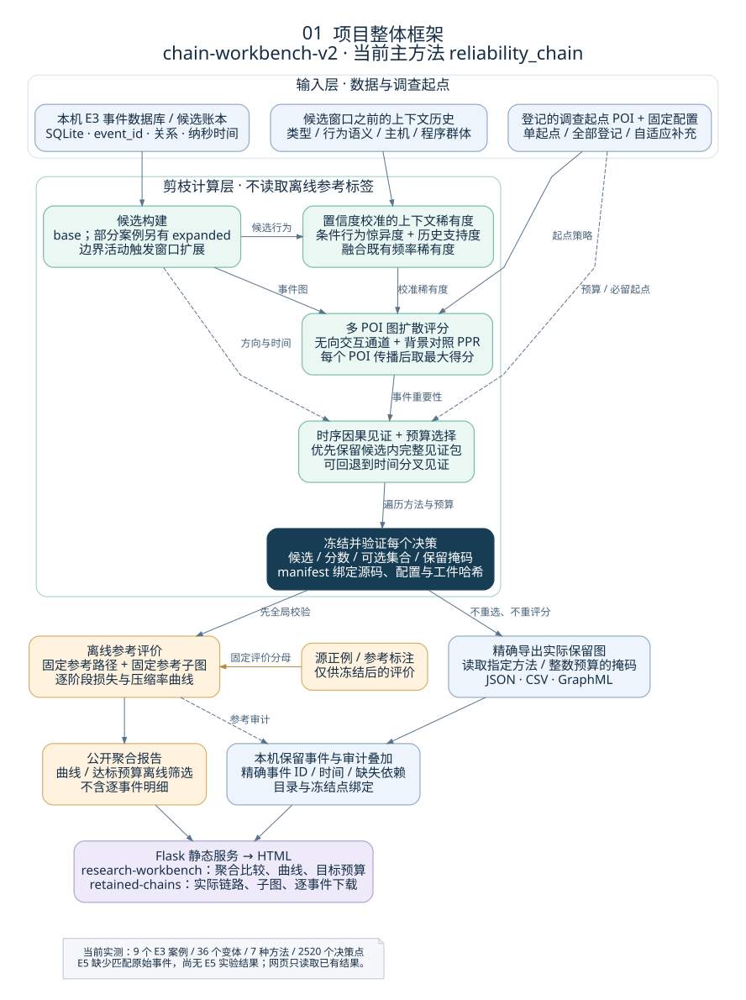
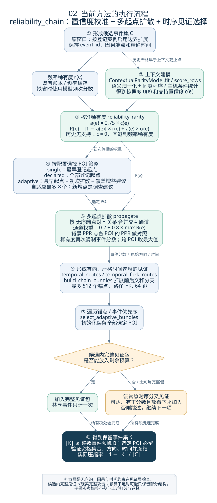
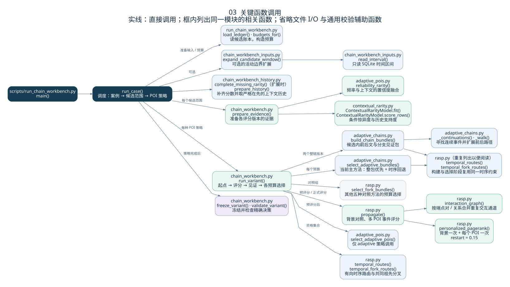
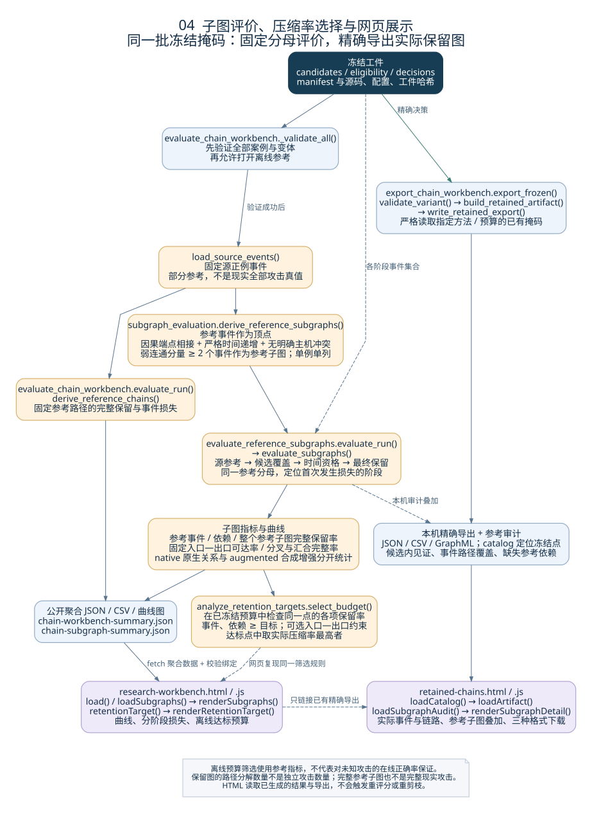

CHAIN-WORKBENCH-V2 · CODE → METHOD → EVIDENCE
从原始事件，到保留下来的因果结构
四张图对应当前项目的框架、算法执行、函数调用，以及参考子图评价与网页展示。主方法为 reliability_chain：融合置信度校准的上下文稀有度与多 POI 图扩散，按预算保留时序因果见证。

先构建候选与历史证据，再完成剪枝并冻结每个选择。冻结结果分别用于离线评价和实际链路导出，最后进入同一个研究页面。参考标签只进入评价分支。


上下文模块估计“在这类程序与主机环境中，这个行为有多意外”，并用历史支持度控制其权重。它能减轻“少见就高分”的问题，但无历史支持时仍回退到频率稀有度，输出也不是恶意概率。

展开实际评分公式与 POI 策略说明
设既有频率稀有度为 r(e)，上下文惊异度为 u(e)，历史支持置信度为 c(e)。当前融合为：
α(e) = 0.75 × c(e) R(e) = [1 − α(e)] × r(e) + α(e) × u(e)
按无序端点对与关系合并通道，通道权重为 0.2 + 0.8 × max R(e)。重复事件不重复增加通道导通权重。背景 PPR 从进程节点出发；各 POI 从其两个端点出发，重启概率为 0.15。
Lₚ(v) = log(1 + max(PPRₚ(v) / PPR背景(v) − 1, 0)) qₚ(e) = sqrt[Lₚ(src) × Lₚ(dst)] × [0.2 + 0.8 × R(e)] S对照(e) = maxₚ normalize(qₚ(e)) S(e) = [S对照(e) + 10⁻⁶ × S普通PPR(e)] / [1 + 10⁻⁶]
每个 POI 的事件分数分别按最大值归一化，再跨 POI 取最大值；选定 POI 的分数设为 1。普通 PPR 的微小回退项让背景常见但可能必需的依赖仍有机会被选择。
single 使用最早的登记 POI；declared 使用全部登记 POI；adaptive 从最早登记 POI 开始，用初次扩散证据与主机 / 程序群体的覆盖增益补充起点，最多 8 个。新增起点属于算法建议。候选窗口扩展使用原登记起点，发生在自适应起点选择之前。
上下文历史截止在完整候选范围之前；既有频率账本 / 缓存的时间口径另有记录，不能把这一严格截止声明扩展到所有旧稀有度输入。

从 scripts/run_chain_workbench.py::main() 开始阅读。run_case() 负责实验调度，run_variant() 负责一个候选范围与 POI 策略下的评分、见证构建和多预算选择。

| 职责 | 源码文件 | 关键函数 |
|---|---|---|
| 运行与冻结 | scripts/run_chain_workbench.pytc_pruning/chain_workbench.py | run_case、run_variant、freeze_variant |
| 上下文稀有度 / POI | tc_pruning/contextual_rarity.pytc_pruning/adaptive_pois.py | fit、score_rows、reliability_rarity、select_adaptive_pois |
| 传播与时序 | tc_pruning/rasp.py | propagate、personalized_pagerank、temporal_fork_routes |
| 见证构建与预算 | tc_pruning/adaptive_chains.py | build_chain_bundles、select_adaptive_bundles |
| 子图参考评价 | tc_pruning/subgraph_evaluation.py | derive_reference_subgraphs、evaluate_subgraphs |
| 精确链路导出 | scripts/export_chain_workbench.pytc_pruning/retained_chains.py | export_frozen、build_retained_artifact、write_retained_export |

将固定源正例事件构成有向无环图，以事件依赖连接分支与汇合。对同一批冻结选择，分别检查参考事件、依赖、整个参考子图和固定入口—出口可达性；逐阶段损失显示问题出在候选覆盖、时间资格还是预算选择。

当前实现是在已有冻结预算中，用离线参考指标筛选达标点，再选择实际压缩率最高的点。它使用了参考信息，属于开发集上的事后工作点选择；未实现针对未知攻击的在线正确率保证。子图分析目前是评价模块，尚未作为在线优化损失。
实际保留图可以完整导出；路径覆盖、候选内见证包、完整参考子图分别计数。它们都不能直接当作独立真实攻击的数量，候选边界之外仍可能有未观察到的事件。